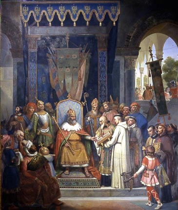
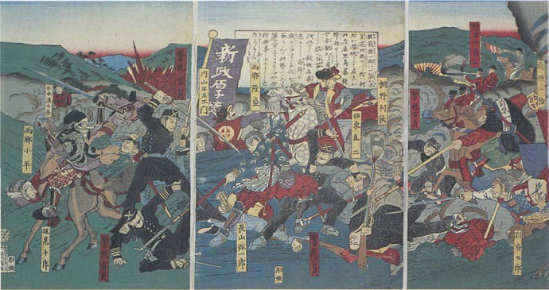

Latest Articles

Renaisans Karoling dan pengaruhnya terhadap Eropa Barat
Sebuah Tulisan Terkait Renaisans Karoling.

Hypatia politik dan agama
Pendekatan terhadap kasus Hypatia.

Pemberontakan Shimabara
Artikel terkait pemberontakan Shimabara.